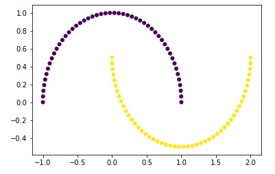
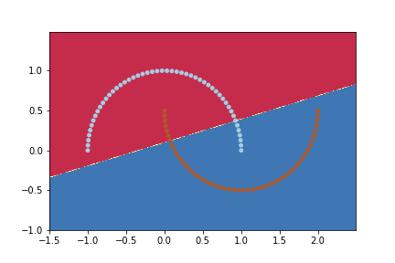
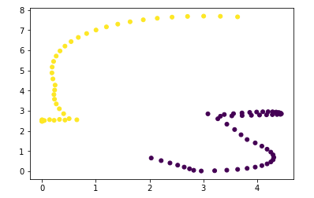
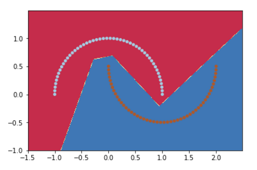
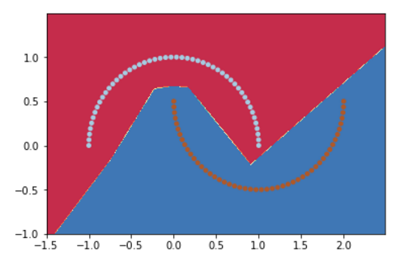
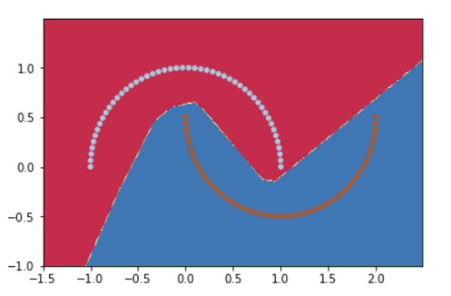
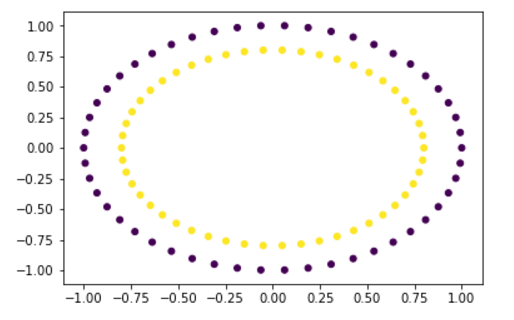
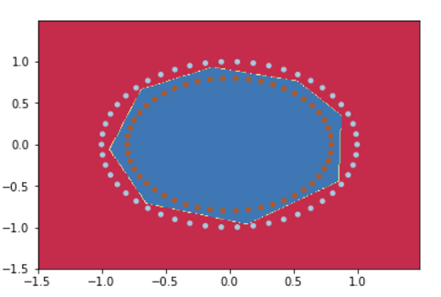
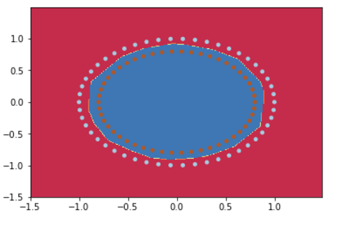

Kabir Ahuja
Deep Learning EnthusiastNeural Networks: Why thou so Powerful!
Hi guys, Today's blog will be a little different from my other blogs, today we won't learn how to do something cool with neural nets, but instead we will see what makes Neural Networks so great for machine learning problems. This post is for the people who know what neural nets are but find it difficult to understand why they work so well. I will take an example of binary classification to demonstrate how neural nets are able to approximate highly complex functions accurately. So lets dive into the details, its going to be fun.
Binary Classification
As you can see from the figure we are given a set of points and some are yellow and other are blue demostrating the different classes(or categories) to which the points belong. Our job is to learn from this data so that given a new point we can predict its class accurately.
The simplest approach to this problem is using a Linear Classifier. What a Linear Classifier does is, it learns a line (known as a decision boundary) which seperates the data points, such that points lying on one side belongs to one class and points lying on the other side belongs to the other class. Like in our problem, what a linear classifier will do is find a line which separates the blue and yellow points.
Now as we can see from the plot, it is impossible to find a line which can separate these points perfectly. I trained a softmax classifier on these data points and got the following plot.

As we can see from the plot, the decision boundary is not able to separate the points belonging to different classes properly, there are many yellow points in the region of blue and vice versa. Hence a linear classifier isn't a good choice for solving this problem. Neural Networks however can solve this problem with much higher accuracy.There are two ways to think why they perform so well. Lets see them.
First Idea: Making the data linearly separable
As we saw above, a linear function wasnt able to separate the data points we had, but what if I transform these points in such a way that they become linearly separable? We can think of neural networks as doing the same thing. There are two important components of a neural network, a) Hidden Layers b) Hidden units in each layer. We call these hidden units as 'neurons'.Below is a figure comparing architectures of a linear classifier and a neural network.
So what happens is that we take our input, pass it to the neural network and in the final hidden layer we have a linear classifier. Hence instead of directly feeding it to the linear classifier we first pass it through our neural network and then the activations at last hidden layer are fed to the linear classifier.While we are training the network, it learns how to transform the input so that it becomes linearly separable. I built a neural net like shown in the figure in tensorflow, trained it for 100000 iterations and then ploted the activations at the last year. Have a look.
As you can see that, the data points can now be separated easily by a line. Hence one way to think why neural networks works so well is by thinking that they transform the input into a form which is linearly separable.I hope this gave you some intuition on how neural nets works.Now lets see another way of looking at the same thing.
Second Idea: Neural Nets learn complex decision boundaries
Dont get confused that in the previous section I said that neural nets make the input linearly separable than why I am saying that they learn complex decision boundaries. What I mean is that they learn linear decision boundaries with respect to the "final hidden layer" not the input.If we plot a decision boundary with respect to the input we get a non linear curve separating the points.I trained a neural network with 1 hidden layer and 4 hidden units and ploted the decision boundary.Here is how it looks.

As we can see our neural net managed to learn a decision boundary which can separate the data points accurately.The decision boundary looks like a collection of lines of different slopes and intercepts.But how did it learn such a decision boundary? Lets see why.
A hidden unit of a neural network is calculated as the dot produt of the set of the weights with the input (or the activations of the previous layer) and then an activation function is applied on the value to get the activation. The most commonly used activation function is 'Rectified Linear Unit'(RELU) and what it does is that it takes the max of the value with zero i.e
a = max(0,w*x).
Hence a neural network can learn different linear functions by setting some neurons (or hidden units)
to zero for certain values of inputs.The figure below demonstrates this thing.Red hidden units means that the value of their activations is zero.
As we can see from the figure, in the first case all the hidden units except the first one are off hence the input only passes from the first unit to the output,whereas in the second case all hidden units are off except the second one. This means that a neural net can learn to turn on or off certain neurons for certain values and hence learn different linear functions for different ranges of values.This is the reason why a neural network manages to learn very complex decision boundaries.Please note that it isnt necessary to have only one neuron activated at a time, I just used it to demonstrate the fact that a neural network can learn different linear functions for different values. I also tried different values of hidden units and got the following results.
4 hidden units
5 hidden units
10 hidden units
Then I tried a different dataset and trained neural network models with different number of hidden units.
Dataset
5 hidden units
15 hidden units
Conclusion
Today we saw the reasons why neural networks works so well on machine learning problems.I will like to mention one thing though that due to a lot of flexibility to learn different non linear functions it is very easy for neural networks to overfit the data. Remember with great power (neural nets) comes great responsibilies(to prevent overfiting). Hence we need to be careful and choose different regularization techniques like L2 and dropout while training our models. I hope that this post gave you some intuition about neural nets. You can check the code I used for training and visualizing decision boundaries right here So thats it for today, see you guys next time. :)